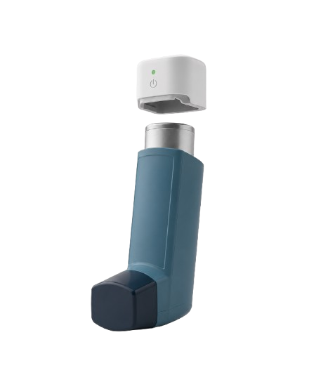

Inteligência Artificial na Saúde Respiratória
Prever a crise respiratória antes que ela aconteça.
Os primeiros sensores acopláveis que transformam qualquer inalador num dispositivo inteligente. A nossa plataforma baseada em IA prevê exacerbações para uma intervenção precoce e uma vida com mais qualidade.


IA Ativa: Risco Baixo
Próxima consulta
Relatório pronto